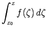

Ableitungen und Integrale von Potenzreihen, Konvergenzkreis
- 1. Ableitungen von Potenzreihen und Konvergenzkreis
- Jede Potenzreihe stellt innerhalb ihres Konvergenzkreises eine analytische Funktion f(z) dar. Die Ableitungen dieser Funktion erhält man durch gliedweise Differentiation der Potenzreihe. Die abgeleiteten Reihen haben denselben Konvergenzkreisradius wie die ursprüngliche Reihe.
- 2. Integrale von Potenzreihen und Konvergenzkreis
- Die Potenzreihenentwicklung des Integrals  erhält man durch gliedweise Integration der Potenzreihe von
 . Der Konvergenzradius bleibt dabei erhalten.
. Der Konvergenzradius bleibt dabei erhalten.